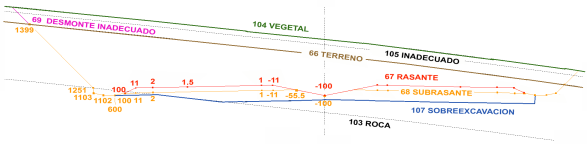

| |
|
YÜZEYLER VE KODLAR
|
Bir ekseni tanımlayan tüm bilgiler, her bir KM için (sabit aralıklarla ve tanımlanmış özel noktalarda) enkesiti oluşturan her bir yüzeyin geometrik verilerini içeren ISPOL#.per dosyalarına yazılır. Her nokta ayrıca, eksenden sağa ve sola doğru artan sayısal kodlar kullanılarak kataloglanır. ISTRAM®/ISPOL® tarafından kullanılan sistemi açıklayan basit bir şema aşağıdaki resimde görülmektedir. Bu resimde, farklı jeoteknik katmanları tanımlayan dört yüzeye sahip tipik bir otoyol enkesiti görülebilir. Bu katmanlar, orijinal araziye paralel olarak uygulama tarafından oluşturulabilir veya enkesitlerde zaten tanımlanmış olan veriler olarak elde edilebilir. Bu jeoteknik çizgiler veya yüzeyler şunlardır: kaya (L66 tipi çizgi), sağlam zemin (L66), uygun olmayan zemin (L105) ve bitkisel toprak yüzeyi (L104). 
Ayrıca dört yapısal çizgi veya yüzey ayırt edilir: kırmızı kot (L67), terasman veya toprak işleri hattı (L68), zayıf zemin kazısı (L107) ve uygun olmayan yarma durumu için bitiş (L69). İyileştirme hattı, duvar, kaplamalar, tünel vb. gibi daha birçok yüzey bulunabilir. Yüzey numaralandırma sisteminin işlevselliği Dolayısıyla yüzey numarası, ISTRAM®/ISPOL® kütüphanelerinde tanımlanmış bir grafik çizgi tipiyle kesin bir şekilde bağlantılıdır. Bu basit yöntemle, eleman tipi grafik görünümüyle (renk, kalınlık, çizgi stili,...) ek bir eleman yapılandırmaya gerek kalmadan ilişkilendirilir. Öte yandan, yüzey verilerini kullanan bazı süreçler (çizilmesi veya yüzey hesaplamak için kullanılması için) onu benzersiz bir şekilde tanımlayabilmelidir. Kodlara göre organizasyonun anlamı Prensip olarak, jeoteknik yüzeyler veya birimler kodlama gerektirmez, ancak kullanıcının mevcut platformun tanımlanması veya bir sembolün kodun konumuna yerleştirilmesi gibi çeşitli amaçlarla belirli noktalara kodlar ataması mümkündür. Ancak, her bir yapısal elemanın bilgisini analiz etmek ve kullanmak için, koordinatlarından bağımsız olarak her zaman tanımlanabilmesi için onu kodlamak gerekir. Örneğin, 67 yüzeyinin 1 ve 1.5 kodları arasındaki yüzey bölümü her zaman ana platforma karşılık gelir, aynı şekilde 100 kodu da kırmızı kot ile terasmanın kesiştiği noktayı tanımlayacaktır. 67 ve 68 yüzeylerinin en sık kullanılan kodları Neredeyse tüm yapısal yüzeyler kodlanmış olsa da, bu çizgilerden birinin özellikler kutusunu enkesit düzenleyicide açtığınızda görülebileceği gibi, şüphesiz en önemlileri 67 ve 68 yüzeylerine karşılık gelenlerdir. Aşağıda, her iki çizginin en sık kullanılan kodlarını içeren bir tablo gösterilmektedir:
|
||||||||||||||||||||||||||||||||||||||||||||||||||||||||||||||||||||||||||||||||||||||||||||||||||||||||||||||||||||||||||||||||||||||||